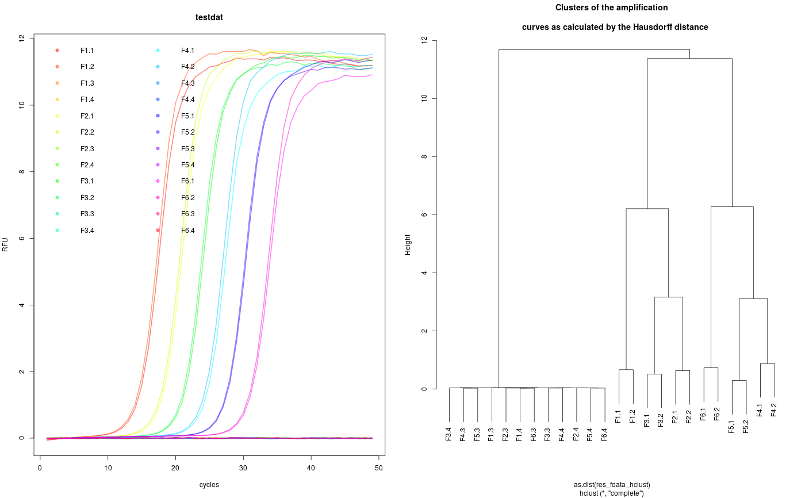

qPCR2fdata.RdqPCR2fdata is a helper function to convert qPCR data to the functional
fdata class as proposed by Febrero-Bande & de la Fuente (2012). This
function prepares the data for further analysis with the fda.usc package,
which includes utilities for functional data analysis (e.g., Hausdorff
distance).
qPCR2fdata(data, preprocess = FALSE)
| data | is a data set containing the amplification cycles (1. column) and the fluorescence (subsequent columns). |
|---|---|
| preprocess | is a logical parameter (default FALSE). If TRUE, the |
M. Febrero-Bande, M.O. de la Fuente, others, Statistical computing in functional data analysis: The R package fda.usc, Journal of Statistical Software. 51 (2012) 1--28. http://www.jstatsoft.org/v51/i04/
S. Roediger, M. Burdukiewicz, P. Schierack, chipPCR: an R package to pre-process raw data of amplification curves, Bioinformatics. 31 (2015) 2900--2902. doi:10.1093/bioinformatics/btv205.
# Calculate slope and intercept on noise (negative) amplification curve data # for the last eight cycles. # Load additional packages for data and pipes. library(qpcR) library(fda.usc)#>#>#> #>#> #> #>#>#>#>#>library(magrittr) # Convert the qPCR data set to the fdata format res_fdata <- qPCR2fdata(testdat) # Extract column names and create rainbow color to label the data res_fdata_colnames <- testdat[-1] %>% colnames() data_colors <- rainbow(length(res_fdata_colnames), alpha=0.5) # Plot the converted qPCR data par(mfrow=c(1,2)) res_fdata %>% plot(., xlab="cycles", ylab="RFU", main="testdat", type="l", lty=1, lwd=2, col=data_colors) legend("topleft", as.character(res_fdata_colnames), pch=19, col=data_colors, bty="n", ncol=2) # Calculate the Hausdorff distance (fda.usc) package and plot the distances # as clustered data. res_fdata_hclust <- metric.hausdorff(res_fdata) plot(hclust(as.dist(res_fdata_hclust)), main="Clusters of the amplification\n curves as calculated by the Hausdorff distance")